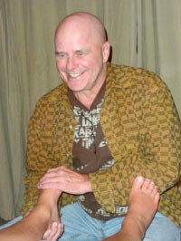

Mar 5th, 2014
By Ellery Littleton

I arranged an appointment recently with Duncan Fraser, one of The Haven’s little cadre of exceptional body workers and healers. Many friends and colleagues have spoken of his remarkable skills at guiding people to a more whole and balanced experience of life.My lower back was on my mind, so to speak, where the pain is chronic, down on the right side of my spine. The ache is sometimes severe, sometimes moderate, but never entirely absent. Pain is always a messenger, and I had long ago received the message.
Duncan asked me a few questions, listening attentively. I talked about my back, of course, putting my hand on my hip, spine and thigh. Duncan nodded, asked me to walk around, sit down, lie down, breathe.
As a secondary issue, I also mentioned my feet, another troublesome area. After checking out my feet with a few gentle touches, he went to work on them, and basically stayed with them for the rest of the session. I was a little surprised, but happy to accept.
As he worked, Duncan spoke occasionally, about breathing, walking, balance, stretching. I think he was speaking to me, or perhaps to himself, or to my body. He had some kind of dialogue going, under his breath: “mmm-hmm, good, that’s right, that’s better, there we go.” He reminded me a little of two great pianists who talked to themselves when they played: Glenn Gould and Errol Garner; one classical, the other jazz. Each carried on an animated mumbled conversation with the instrument, or the music, while playing.
It was almost as though Duncan, with great sensitivity, was “playing” my feet, and to a lesser degree, my legs – stretching and massaging them, manipulating them, firmly but gently. I had imagined he would be much more aggressive and intrusive, and it is obvious that he can do that if he wishes; I could feel the muscular grip under the velvet glove. One colleague described him as rather like “a leprechaun with the body of an Olympic wrestler.” Powerful, but cheerful and eccentric with a mischievous twinkle.
After our session, and for the rest of the day, I felt like I was in a light trance, and enjoyed walking down to Gabriola Sands Park and back. I knew I would want to see Duncan again. And soon. My feet are just the beginning.
Structural integration – “You created your body’s patterns; you can change them.”
Duncan Fraser is a Certified Advanced Practitioner of Structural Integration. He has also completed a DipC. and Masters degree program at Haven, assisting in and co-leading several Come Alive programs over a period of ten years. You can read more about his impressive training and background on his website: www.bodyspiritcentre.com. In a nutshell, however, “Master Bodyworker par excellence” pretty well says it all.
Duncan is a key member of Haven’s “programs support team” of bodyworkers. He works with people in a very respectful way that honours their boundaries and individual needs. He is very skilled and intuitive, bringing his heart and spirit to each encounter.
“The work of restructuring a body begins with the goal of creating balance, with consistent energy flow and efficient, easy movement,” Duncan says. “Chronic pain and disease come from habitual restrictions and tightness. Structural integration releases the body from lifelong patterns of tension, permitting it to feel more balanced and integrated.”
A key question is: Can a body change? Duncan’s answer is unequivocal: “Yes – you created your body’s patterns; you can change them. Structural integration helps you to understand your body’s language and how to listen to its requests – sometimes its pleadings – for new behavior. This involves developing a new awareness about the body’s limits and what kind of love and nourishment it needs.”
Duncan has worked with people of all ages, from the very young to the very old. “Nobody is too old to understand their self-imposed barriers to being fully alive,” he says.
Who can benefit from this work? “Pretty well everybody,” Duncan comments – “people who feel tight or stressed, who want to know more about their bodies; people who experience pain or illness, who are looking for more energy, who want to understand body language.”
“Show up and be in service”
Duncan has been involved with The Haven since 1988. He made the journey to Gabriola after what he describes as “a life-altering transition and a brush with death.” It was then, he says, that he realized he “knew very little about what a relationship was or meant.” His initial Haven experience was a Come Alive with Mark Fraser, Louise Belisle and Joann Peterson. “I believe this was the first time I had felt love,” he adds.
“The Haven is a unique place that offers heart-centered opportunities for people to become aware of themselves and open to new possibilities,” Duncan says. “Working there, I feel I am in service to human evolution, and this excites me greatly. I have benefited from the hard-earned wisdom which has come to me through fellow bodyworkers, participants, program leaders, and the working staff who keep The Haven functioning.
“Wisdom comes from seasoning ideas and knowledge into the cells of our bodies and it took a lot of courage and faith for me to hang in long enough to begin to manifest wisdom. I have found it helpful to be light-hearted and joyful when times get difficult.”
Duncan says that his phrase for this period of his life is: “Show up and be in service,” adding that “each one of us needs to step forward with our gifts – our heart essence – to help move the world away from the old paradigm of power and control toward creating more peace and harmony.”
“His understanding of the language of our bodies is masterful”
I talked with several Haven faculty members and others who have experienced Duncan’s extraordinary bodywork. Following are a few of their comments.
Cathy Wilder:
I have known Duncan for more than 20 years. He is one of my most consistent, honest, courageous and inspiring friends and colleagues. My wish for men of all ages is that they spend some time with Duncan. He is a compassionate, creative, provocative mentor. I think many men are hungering for someone of his depth, wisdom and heart to support them on the path to well-being.
I believe that anyone who has the good fortune to connect with Duncan will be spiritually richer and healthier as a result. He is one of the most gifted bodyworkers I know. He is a trail blazer in the healing arts and expansion of consciousness.
Ernie McNally:
“Kindness” is the first word that comes to mind when I think of Duncan. One of my pleasures at Haven is running into him; when he turns and sees me, there is a gleam and a smile from the top of his head to his toes, which is his very authentic response. He genuinely loves people and you can feel it right away. His bodywork is deep, sensitive and perceptive. He has a strong feminine side and is not afraid to bring it forward.
Toby Macklin:
I don’t really understand what it is that Duncan does. I can’t fit him into any of my usual frameworks. He will often preface something he says to me with “This may not make any sense to you, but…” And often, he’s right (it doesn’t!). Yet his work very clearly makes sense to me in my body. I always feel better for seeing him, and I think he has helped me make some very significant shifts in my physical, emotional and intellectual health.
Over more than a decade, I have benefited hugely from Duncan’s kindness and strength. I love that he keeps exploring new ideas; there’s never a dull moment. I’ve had bells and eagle feathers and sprays of perfume; he’s pinned me to the wall and leapt onto the massage table. And above all, I have experienced an enormous respect and loving from him for the experience of my body-mind-spirit, which has helped me develop the same for myself, and for others.
Sher Snow:
I had heard that Duncan’s work can be painful, and when I belly-laughed during the pain, he explained to me that joy was the other side of pain and suggested I was expressing what I had buried. For me, this was a powerful statement, and speaks to how Duncan works. He is very intuitive and follows your body’s needs, not what you ‘think’ you need.
I completed a series of ten sessions with Duncan and have gone back for about a dozen more ‘tune-ups’ – and I will certainly continue to see him. I sometimes wonder just what it is that he does – is it energy work, bodywork, emotional work or spiritual work? It is all of these things, all-encompassing and powerful.
Ian Curtin:
Duncan is one of those rare individuals whose presence lifts up my heart. His warm greetings and desire to know what is happening in my life is refreshing and invigorating. His understanding of the language of our bodies is masterful. When I have gone to him for help, he consistently listens closely to how my body is doing and offers me the kind of help that leads to a significant increase in my well-being. All this, and a few laughs to keep the energy flowing. Duncan is one of my favourite people.